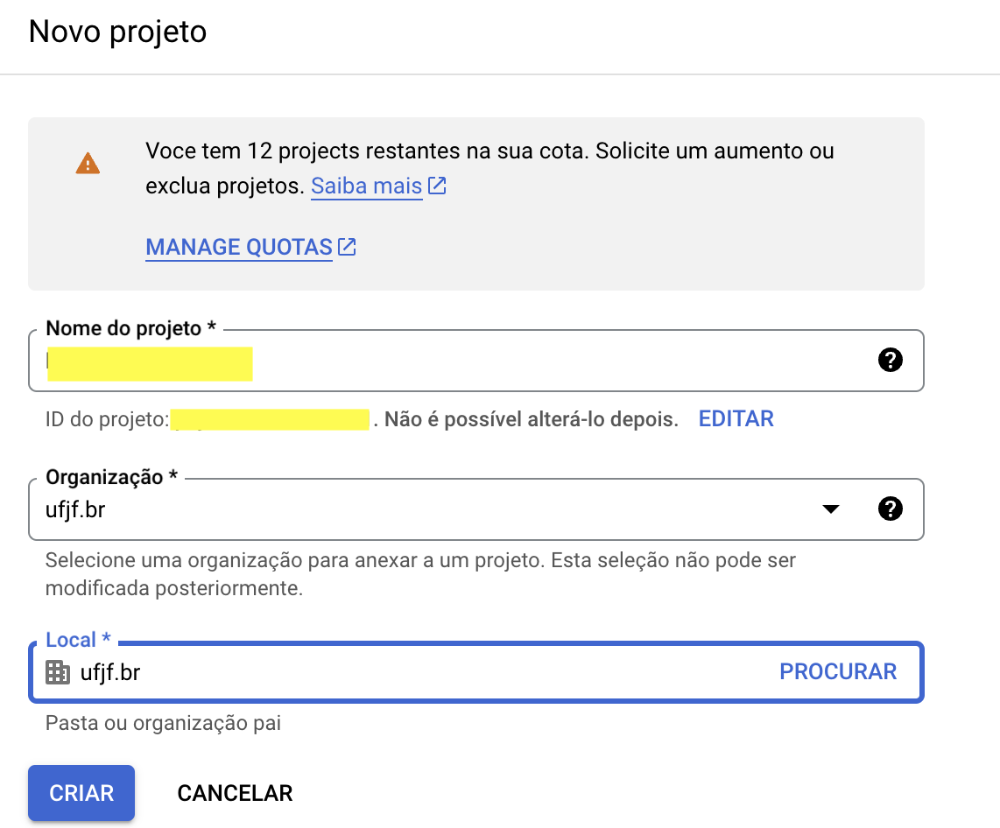
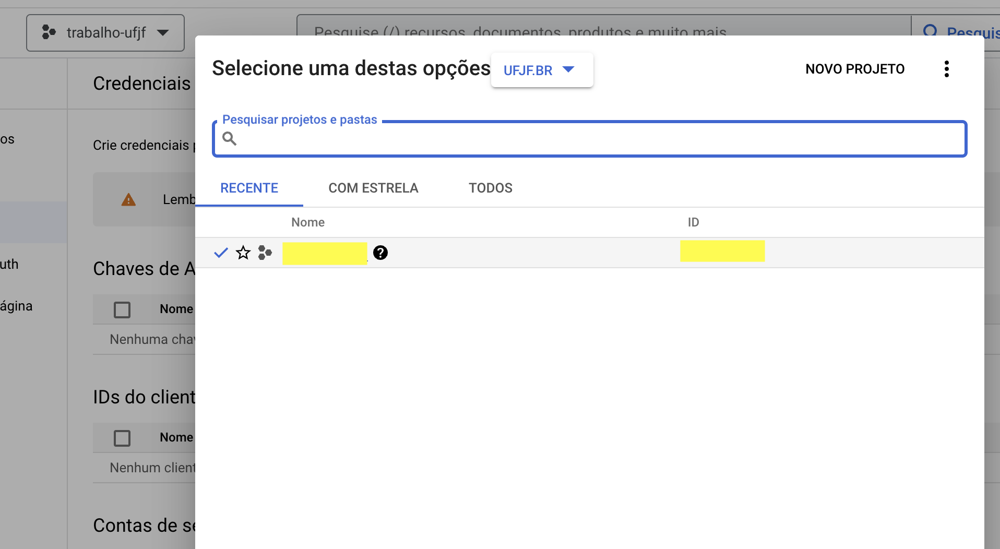

```{r}
#| label: setup
# geral e tratamento de dados
library(here)
library(tidyverse)
# bases de dados
library(basedosdados)
```Introdução
A Base dos Dados é uma platadorma excelente para obter dados oficiais e tratados de forma conveniente. Podemos baixá-la direto no R com facilidade, basta prestarmos atenção a algumas etapas.
Esta é uma rotina simplificada. Veja mais no Workshop: Aprenda a acessar dados públicos em R, da Base dos Dados.
Primeiros passos
Sempre que for trabalhar em um novo projeto, aproveite as funcionalidades do R Studio. Vá em File > New Project... > New Directory ou Existing Directory. Segundo passo: criar um arquivo para a rotina (File > New File... > ...). Pode ser um R Script, um R Markdown ou um Quarto Markdown (recomendo este último).
Use pastas diferentes dentro da sua pasta do projeto para organizar seus arquivos. Eu uso três pastas; data, src e output: a primeira para as bases de dados, a segunda para os códigos e a terceira para PDFs, gráficos e outras produções.
Crie um bloco de código (Ctrl + Alt + I) para chamar os pacotes necessários. Use a opção #| label: setup, como abaixo, para ele sempre ser executado no começo.
Google Cloud
Para baixar os dados no R, vamos precisar criar um projeto no Google Cloud. Os projetos do Google Cloud são muito usados em diversas situações (ex.: APIs do Google Maps) e a Google nos dá um limite gratuito (1 TB por dia ou 200 dólares por mês): mas não se preocupe, você não vai estourar essa cota.
- Vá até cloud.google.com/
- Clique em
Console(canto superior direito) - Na caixa de diálogo (vide abaixo), concorde e continue
- Em seguida, clique em
Selecione um projeto>NOVO PROJETO - Dê um nome ao projeto. Esse nome não pode ser alterado depois.

- Após criar o seu projeto, você será direcionado à página do projeto. Agora, é só configurar as funções do pacote
{basedosdados}no R para acessar o seu projeto.
Base dos dados
Vamos chamar a função set_billing_id(). Dentro dela, você vai inserir o ID do seu projeto (entre aspas, porque é um character), disponível aqui:

O seu ID do projeto é pessoal. Não compartilhe com ninguém, ou disponibilize na internet, ou você corre o risco de ganhar uma fatura nada amigável no seu cartão de crédito.
```{r}
#| label: config-bd
set_billing_id("id-projeto")
```Você deve ver a mensagem “Project keys set successfully”.
Chamada SQL
A melhor forma de baixar dados da BD pelo R é fazendo uma chamada SQL (lê-se “síquel” ou sequel). SQL é uma linguagem de pesquisa, muito usada para acessar base dos dados. Mas não se preocupe, não precisamos dominar SQL! Basta aprender a estrutura básica.
Query: sintaxe básica
Na página da base que você pretende baixar (ex.: PNAD Contínua), copie o código que está na aba SQL: ele é a sua query, que você vai usar para requisitar uma informação. Você vai criar um objeto no R para guardá-la.
Observe que a query tem a seguinte estrutura > SELECT * FROM `basedosdados.br_ibge_pnadc.microdados` LIMIT 100
Vamos entendê-la:
SELECTindica as variáveis que vamos selecionar. Como essa informação é seguida de um asterisco, indica que vamos selecionar todas as variáveis da base. Para selecionar variáveis:- Selecione uma das tabelas tratadas no menu lateral esquerdo.
- Desça até colunas: ali você encontra o nome das variáveis, seu formato e uma descrição.
- Separe os nomes das variáveis por vírgulas após
SELECT(apague o asterisco)
FROM`basedosdados.br_ibge_pnadc.microdados`: o endereço de onde os dados virão.LIMIT 100significa que estamos limitando a baixar apenas as 100 primeiras linhas.
Ao baixar microdados do Censo, da Rais ou da Pnad, estamos lidando com um volume gigante de informações. Por isso, é recomendável usar a opção LIMIT 100, LIMIT 1000 etc para baixar só um pedaço e testar se você vai querer mesmo essa base (por exemplo, investigar se as variáveis te atendem).
Quando você já tiver certeza de que vai usar essa base, tire o LIMIT XXX, mas atenção: é extremamente recomendável que você selecione uma lista de variáveis em vez de baixar todas. Isso vai poupar não apenas sua internet e o espaço no seu disco, mas também a eficiência do R quando for ler e trabalhar nos seus dados.
Exemplo: vamos pegar algumas informações da PNAD de domicílios.
```{r}
#| label: query-1
query_pnad <- "SELECT ano, id_domicilio, id_uf, id_upa, V1028, V2007, V2010, V3001, V4009, V4012, VD3005 VD4032 FROM basedosdados.br_ibge_pnadc.microdados LIMIT 100"
```Podemos melhorar a query ainda mais aprendendo mais três argumentos: WHERE, AND, OR e in. Eles nos ajudam a filtrar a base para, por exemplo, baixar dados só de um estado, de anos específicos ou uma combinação disso tudo. Isso facilita muito a nossa vida, porque assim evitamos baixar um monte de dados desnecessários.
Exemplo: atualizar a query anterior para pegar apenas dados de 2017 a 2021 de Minas Gerais. Para isso, vamos usar um pouco de lógica para montar a sintaxe:
WHEREindica os filtros a serem aplicados. No caso,sigla_uf='MG'é o filtro do estado.- O filtro do ano é mais complicado. Temos duas alternativas:
ano = 2017 OR ano = 2019 OR ano = 2021. Muito repetitivo!- Melhor:
ano in (2017,2019,2021).
- Agora, como queremos dados de MG E nessa janela temporal, concatenamos os dois com
AND:SELECT (...) WHERE sigla_uf='MG' AND (ano in (2017,2019,2021))- Colocamos a cláusula do ano dentro de parênteses para garantir que tudo aquilo será avaliado. Isso é importante, por exemplo, quando estivermos trabalhando com cláusulas
ORem conjunto, senão vira bagunça.
A sua query é um vetor entre aspas no R. Assim, se você estiver filtrando uma variável que é character, você pode acabar estragando sua query se não tomar cuidado. Por isso, use aspas duplas (") para a query e aspas simples (') para os characters dentro da query, como fizemos com sigla_uf='MG'.
```{r}
#| label: query-2
query_pnad <- "SELECT ano, id_domicilio, id_uf, id_upa, V1028, V2007, V2010, V3001, V4009, V4012, VD3005 VD4032 FROM basedosdados.br_ibge_pnadc.microdados WHERE sigla_uf='MG' AND ano in (2017,2019,2021) LIMIT 100"
```Já está bom, mas essa query está difícil de ler. Podemos separar cada bloco dela em objetos diferentes. depois concatenar tudo em um objeto só usando paste():
```{r}
#| label: query-3
variables <- "ano, id_domicilio, id_uf, id_upa, V1028, V2007, V2010, V3001, V4009, V4012, VD3005 VD4032"
source <- "`basedosdados.br_ibge_pnadc.microdados`"
clause_where <- "sigla_uf='MG'"
clause_and_ano <- "(ano in (2017,2019,2021))"
### query: PNAD MG 2017-2021
query_pnad_1721 <- paste(
"SELECT", variables,
"FROM", source,
"WHERE", clause_where,
"AND", clause_and_ano,
"LIMIT 100"
)
```Essa estrutura é útil porque permite facilmente modificar trechos evitando erros e reproduzir em outros trabalhos mantendo uma sintaxe padronizada e eficiente. Outra dica: você pode modificar a query comentando linhas do seu vetor, como no exemplo abaixo (tirar o LIMIT e baixar tudo).
```{r}
#| label: query-4
### query: PNAD MG 2017-2021
query_pnad_1721 <- paste(
"SELECT", variables,
"FROM", source,
"WHERE", clause_where,
"AND", clause_and_ano,
"LIMIT 100"
)
```Baixar a query
Agora, podemos baixar a query. Podemos fazer isso de duas formas: salvando em um objeto do R ou salvando em um .csv no computador. Eu prefiro a segunda opção, porque permite carregar os dados depois sem ter que baixar tudo de novo. Na hora de baixar os dados, vai aparecer uma opção no console do R pedindo para autenticar o usuário no seu navegador (ou digite 2, se o seu email já aparecer) e prossiga.
Você deve selecionar todas as caixas, como na imagem abaixo.
Opção 1: direto no R
Nesse caso, usamos a função read_sql()
```{r}
#| label: download-query-R
df_pnad <- read_sql(query_pnad_1721)
```Opção 2: salvar no disco
Para isso, usamos a função download() e incluímos na chamada o argumento path com o caminho para salvar. Como estamos usando um R Project, passamos o diretório relativo à pasta do projeto. Ou seja: não precisa de inverter barras e pegar o caminho completo da pasta. No caso de usar RMarkdown ou Quarto (meu caso) em vez de um R Script, usamos a função here() também.
No exemplo abaixo, vamos salvar a base dos dados na pasta data dentro da pasta do projeto (não se esqueça de criar a pasta).
```{r}
#| label: download-query
download(query_pnad_1721, path = here("data/df_pnad_mg_1721.csv"))
```Pronto! Agora já podemos carregar, tratar e analisar os dados:
```{r}
#| label: load-bd
df_pnad <- read_csv(here("data/df_pnad_mg_1721.csv"))
```Citação
BibTeX
@online{bazolli2023,
author = {Bazolli, Arthur},
title = {Acessando a Base dos Dados no R},
date = {2023-06-20},
url = {https://baarthur.github.io/posts/2023-06-20-basedosdados/},
langid = {pt-BR}
}
Por favor, cite este trabalho como:
Bazolli, Arthur. 2023. “Acessando a Base dos Dados no R.”
June 20, 2023. https://baarthur.github.io/posts/2023-06-20-basedosdados/.